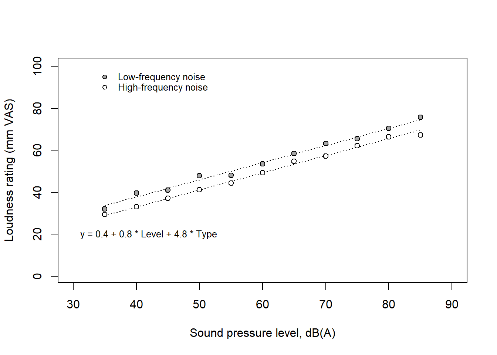
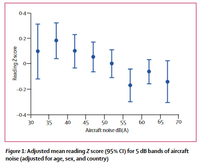
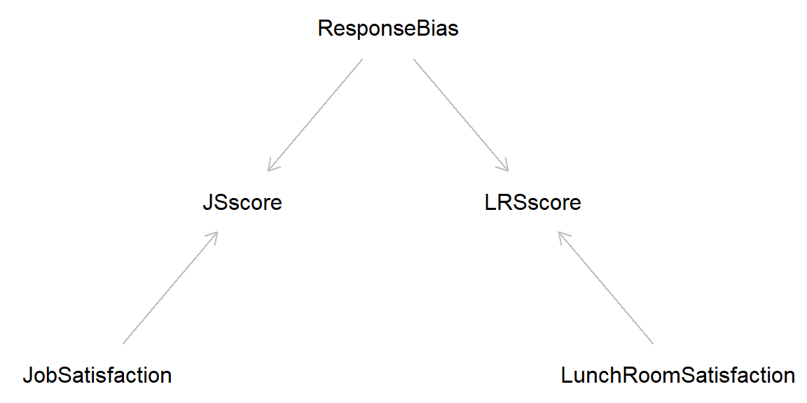
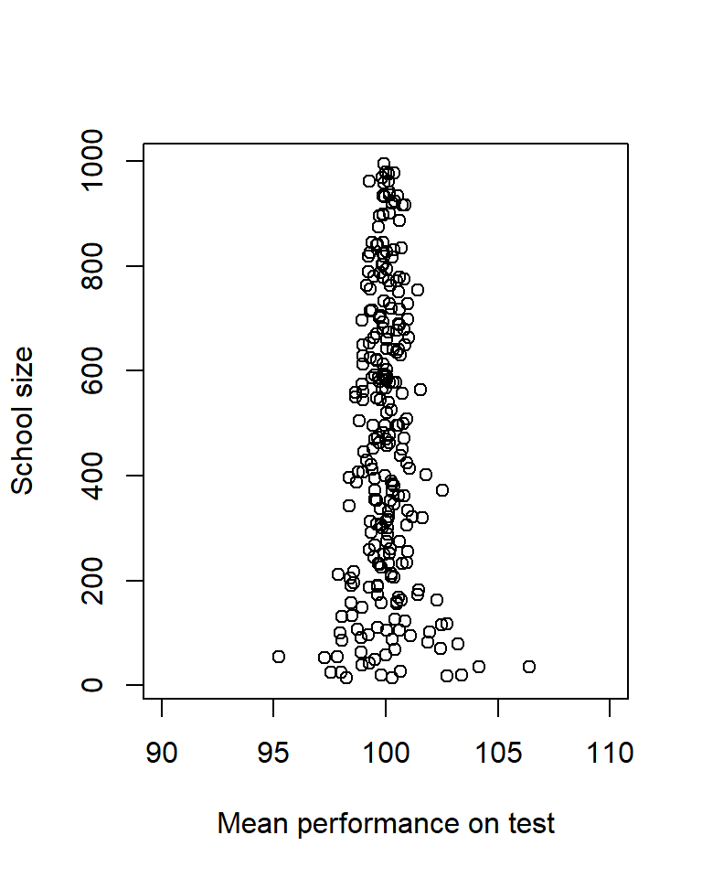

Code
library(dagitty) # R implementation of http://www.dagitty.netWarning: package 'dagitty' was built under R version 4.4.3Load R-libraries
library(dagitty) # R implementation of http://www.dagitty.netWarning: package 'dagitty' was built under R version 4.4.3Theoretical articles to read:
Construct validity. The validity with which inferences are made from the operations and settings in a study to the theoretical constructs those operations and settings are intended to represent. It is about the correct labeling of variables and accurate language use.
Steiner et al. (2023), p.25
Measurement
Variables. Explicitly define the variables in the study, show how they are related to the goals of the study, and explain how they are measured. The units of measurement of all variables, causal and outcome, should fit the language you use in the introduction and discussion sections of your report.
Wilkinson (1999), p. 595
Measurement is fundamental to empirical science. However, there seem to be no single agreed upon definition of “measurement”. In physics, measurement is typically defined as the estimation of ratios of quantities (or quantifiable attributes). For example, if an object is twice as long as the standard meter [m], then its length is 2 m (length being an attribute of the object, 2 being its magnitude relative to the standard).
In psychology (and similar fields), it may, of course, be hard to establish ratios: What would it mean to say that someone is twice as depressed as a standard case of depression? It seem that we need a weaker definition of “measurement” to be able to claim that we can measure things like degree of depression, happiness, annoyance, trust, empathy, health, …
The most famous weak definition was proposed by the psychologist S.S. Stevens:
… measurement, in the broadest sense, is defined as the assignment of numerals to objects or events according to rules.
Stevens (1946).
This definition is admittedly weak, and we can likely improve upon it. However, let’s leave that task to the measurement theorists (e.g., Michell (1997)). For our purposes, Stevens’ definition will suffice.
Stevens identified four levels of measurement scales:
The view that measurement is the estimation of ratios of quantities would include measurement at the interval or ratio scale level, but would not accept rank-ordering or naming (nominal) as measurement. But since these are examples of “assignment of values according to rule”, they are measurement according to S.S. Stevens.
Three remarks:
Always try to measure your key variables on well-defined scales, in particular your outcome variable. This is crucial if your goal is to assess causal effects, that is, to assess a difference (or ratio, or some other contrast) between potential outcomes. Differences require at least interval-scale data, so you need either to show that this is at least approximately true for your outcome measure, or you need to state this as an explicit assumption of your assessment.
Sometimes it is possible to use a matching strategy to transform a less well-defined outcome variable on a well-defined physical scale. Here is an example:
# Simulate data
set.seed(3212)
x <- rep(seq(35, 85, 5), 2)
d <- rep(c(0, 1), each = length(x)/2 )
y <- 1 + 0.8*x + 4.5 * d + rnorm(length(x), 0, 1)
# Fit regression model
mfit <- lm(y ~ x + d)
cf <- mfit$coefficients
# Empty plot
plot(x, y, pch = "", ylim = c(1, 100), xlim = c(30, 90),
xlab = "Sound pressure level, dB(A)", ylab = "Loudness rating (mm VAS)")
# Add prediction lines
xx <- 35:85
lines(xx , cf[1] + cf[2]*(xx ), col = "black", lty = 3)
lines(xx , cf[1] + +cf[3] + cf[2]*xx, col = "black", lty = 3)
# Add points
points(x[d == 0], y[d == 0], pch = 21, bg = "white")
points(x[d == 1], y[d == 1], pch = 21, bg = "darkgrey")
# Add legend
points(35, 95, pch = 21, bg = "darkgrey", cex = 0.8)
text(36, 95, labels = "Low-frequency noise", cex = 0.8, pos = 4)
points(35, 90, pch = 21, bg = "white", cex = 0.8)
text(36, 90, labels = "High-frequency noise", cex = 0.8, pos = 4)
# Add regression equation
eq <- paste("y = ", round(cf[1], 1), " + ", round(cf[2], 1), " * Level + ",
round(cf[3], 1), " * Type", sep = "")
text(30, 20, labels = eq, cex = 0.8, pos = 4)
A listener rated the loudness of sounds on a visual analogue scale (VAS) with endpoints labeled ‘very soft’ and ‘very loud.’ The sounds were dominated by either low-frequency or high-frequency components, with their overall levels systematically varied in terms of A-weighted sound pressure level, dB(A). On average, low-frequency sounds were rated as louder than high-frequency sounds, with a difference of about 5 units (mm) on the loudness VAS. However, the interpretation of these units is unclear—what does a difference of 5 units really signify?
A more meaningful comparison can be made by expressing this difference in decibels, specifically along the x-axis. Since the regression lines for the two frequency groups were parallel, the vertical difference was constant, corresponding to approximately 6 dB(A). In psychoacoustics, dB(A) is a well-understood measure, and a 6 dB(A) difference is considered substantial. Therefore, the results can be interpreted in terms of loudness matching: at the same dB(A) level, low-frequency sounds are perceived as louder, and the high-frequency noise needs to be increased by 6 dB(A) to be perceived as equally loud.
Here is another example form an observational study of the causal effect of aircraft noise exposure of schools on the pupils’ performance on a test of reading comprehension. The study was conducted around airports in three countries, UK, Netherlands, and Spain, and reading comprehension was assessed using nationally standardized and normed tests (different for the three countries). To compare across countries, outcome scores from each country was standardized so a score of 0 is equal to the average score of all pupils, 1 is equal to a performance corresponding to one standard deviation above the average score, etc.

The figure show a decline in performance (z-scores) with higher aircraft noise exposure (linear regression with a slope of about -.01 per dB) and the author’s concluded that “Our findings indicate that a chronic environmental stressor, aircraft noise, could impair cognitive development in children, specifically reading comprehension” Stansfeld et al. (2005).
But how large was the estimated causal effect? It is not easy to judge from z-scores from a reading-comprehension test. The data was from three countries, and the authors used national data to express the result in months of reading delay as a function of exposure: “A 5 dB difference in aircraft noise was equivalent to a 2-month reading delay in the UK and a 1-month reading delay in the Netherlands. There are no national data available for Spain”.
Variables are set of values assigned to attributes of objects. For instance, we may define “age” as a variable that may take integer values between 20 and 80. Our sample may have been restricted to participants in that age range and we did not bother to measure age to decimals of years. Despite these limitations, it make sense to treat this as a continuous variable at ratio level. We may define a variable “eye-color” to have one of four values “blue”, “brown”, “green”, “other”, and this variable would be at the nominal scale level, because there is no meaning in saying that one value is greater or lesser than another. This would of course still be true if we recoded the variable to let the integers 1, 2, 3, and 4 represent “blue”, “brown”, “green”, and “other”, respectively.
All measured values can be viewed as reflections of an underlying and unobservable latent variable (or construct). Sometimes, this distinction is trivial and therefore ignored, as we can be pretty sure that the measured value is just proportional to the latent construct. For example, it seem safe to assume that measurements in centimeters are proportional to the latent variable length. It is much less obvious for latent variables such as “intelligence” or “depression”. In order to avoid ambiguity, it is a good idea to stick to what is observable and prefer “IQ-score” over “intelligence”, or “depression-score” over “depression”.
Read Wilkinson et al. !
Effect sizes. Always present effect sizes for primary outcomes. If the units of measurement are meaningful on a practical level (e.g., number of cigarettes smoked per day), then we usually prefer an unstandardized measure (regression coefficient or mean difference) to a standardized measure (r or d). It helps to add brief comments that place these effect sizes in a practical and theoretical context.
Wilkinson (1999), p. 599,
“Effect” is a causal term, and the statement that a treatment has an effect on an outcome is a causal statement. Thus, “effect size” implies (or should imply) causality. However, the term “effect size” is typically used in a broader sense than this, including contrasts (Cohen’s \(d\)) or associations (e.g., Pearson’s \(r\)) between variables that we do not believe to be causally related. In this course, we will restrict our use of the term “effect size” to estimates of a causal effect sizes, and use “difference”, “contrast”, or “association” when we talk about relationships without claims of causality.
# Cohen's d simulation ... under construction ...
set.seed(999)Random error generally adds to the variability of results and thereby to the uncertainty of estimated effects. Averaging over repeated measures (e.g., many items in a questionnaire) reduces random error (increase reliability) but not systematic error. An invalid test will bias effect estimates away from the true effect also when random measurement error is low.
Classification is a kind of measurement (in Stevens’s sense), typically at the nominal or ordinal level. For instance, individuals may be classified in terms of a categorical outcome variable (e.g., Dead versus Alive, or Cases with versus Cases without disease) or exposure variable (e.g., Exposed versus Non-exposed, or Noise exposure categories: <45, 45-49, 50-54, 55-59, 60-64, >= 65 dB).
Random misclassification, also called nondifferential misclassification, will generally attenuate effect size estimates. For example, the relative risk of disease for exposed versus non-exposed individuals will be lower with nondifferential misclassification of exposure or outcome or both.
Systematic misclassification, also called differential misclassification, is categorization errors that are related to other variables of interest to the causal question. This may introduce bias in either direction, that is, it may lead to effect estimates that over- or underestimate the true effect.
As an example, Diagnostic suspicion bias (e.g. https://catalogofbias.org/biases/diagnostic-suspicion-bias/) may lead to differential misclassification. Example: Emphysema is diagnosed more frequently in smokers than in non-smokers. However, smokers may visit the doctor more often for other conditions (e.g. bronchitis) than non-smokers, which means that a reason smokers could be diagnosed with emphysema more often is simply because they go to the doctor more often – not because they actually have higher odds of getting the disease. Unless steps are taken to control for this possibility, emphysema will be under-diagnosed in non-smokers, which is a classification error because the diagnosis is related to the variable “how often smokers visit the doctor, versus non-smokers”. (I borrowed this example from another source, but unfortunately, I’ve lost the reference.)
In this section, I will give some examples how we may be mislead by measurement. Note that for some of these examples, the issue may not be with quality of measurement, but rather with the interpretation of measured values. For example, performance of a work unit may be measured as the number of items produced on a day, and this measure may have high reliability and high validity. However, we may still question it as a measure of the effect of our treatment (e.g., improved lighting conditions) as we might have obtained the same result no matter the treatment. Maybe the fact that the workers knew they were participants in a study made all the difference (the so called Hawthorne effect).
Examples of biases related to measurement and to causal interpretation of measures:
Examples of design tricks to reduce the risk of bias:

Latent variables (unmeasured): JobSatisfaction, LunchRoomSatisfaction, Response bias
Manifest variables (measured): JSscore, LRSscore
In this section, I will give some examples how we may be mislead by random error. Note that these examples may relate to sampling errors or to measurement errors or both in combination.
You will find the largest and the smallest effects in studies with small samples, because random errors are more likely to cancel out in large than in small samples. Sometimes this statistical phenomenon is mistaken for a real causal effect. For instance, the average performance on standardized tests will probably be highest in small schools, but this is not because small schools make students better but because of random variability. If you looked at the other end, the worst average performance would probably also be from small schools. Here is a simulation of this phenomenon illustrated in a so called funnel plot. Here a sneaked in the sapply() function that is useful for repeated use of a function with different arguments each time.
set.seed(999)
# Size of 250 schools, from n = 10 to n = 1000
nn <- sample(10:1000, size = 250, replace = TRUE) # Random uniform
# Function that simulates a mean score for a school of size n
mean_score <- function(n){
out <- mean(rnorm(n, mean = 100, sd = 15))
out
}
# Apply function on each of the school sizes in nn, using the sapply() function
x <- sapply(nn, mean_score) # User-made function as argument!
# n for worst school
largest_neg <- nn[x == min(x)] # Size of school with the worst performance
# n for large effect sizes
largest_pos <- nn[x == max(x)] # Size of school with the best performance
ss <- c(worst_score = min(x), n_worst = largest_neg,
best_score = max(x), n_best = largest_pos)
# Funnel plot
plot(x, nn, xlim = c(90, 110), ylab = "School size",
xlab = "Mean performance on test")
School-size of worst and best average performance
round(ss, 1)worst_score n_worst best_score n_best
95.2 54.0 106.4 36.0 Regression fallacy: Regression to the mean interpreted as a causal effect.
Sports Illustrated Jinx. A successful athlete that make it to the front page of the prestigious sport journal Sport Illustrated will performance less well in the coming season (from Gilovich (2008)).
A flurry of deaths by natural causes in a village led to speculation about some new and unusual threat. A group of priests attributed the problem to the sacrilege of allowing women to attend funerals, formerly a forbidden practice. The remedy was a decree that barred women from funerals in the area. The decree was quickly enforced, and the rash of unusual deaths subsided. This proves that the priests were correct (from Gilovich (2008)).
Old exam question: “Children of chess world-champions are likely to become proficient chess players, but so far none have reached the top 100, presumably because chess world champions tend to be selfish persons unwilling to share their knowledge with others, including their children”. Find an alternative explanation.
Success: Talent + Hard Work + Luck
Great success: a little more Talent + more Hard Work + much more Luck.
The practice problems are labeled Easy (E), Medium (M), and Hard (H), (as in McElreath (2020)).
5E1. Here some common measurement scales. Discuss how they relate to Steven’s classification of nominal, ordinal, interval, and ratio scales.
5E2. What is the difference between intelligence and IQ-score?
5E3.
5E4. Construct validity is about “correct labeling of variables and accurate language use” (Steiner et al. (2023)). Explain with an example.
5E5. “Children of chess world champions are often skilled players, but none have yet reached the top 100. This because chess champions are typically focused on their own success and are reluctant to share their expertise with others, including their own children”. Please find an alternative explanation.
5M1. Reaction time [ms] as a measure of time is clearly on a ratio scale, but what if its used as a measure of intelligence? Discuss with reference to the concepts “manifest” and “latent” variable.
5M2. From Wikipedia: Construct validation is the accumulation of evidence to support the interpretation of what a measure reflects. What does this mean? Interpret in terms of latent and observable variables.
5M3. An influential book considered the Placebo effect and the Hawthorne effect as threats to construct validity, that is, related to the interpretation of measurement scores. Do you agree?
5M4. Explain how negative controls may be used in support for a causal interpretation of data.
5M5. Demand characteristics is a curious term in psychology research. Define what it means and provide your own examples to illustrate how demand characteristics might influence the outcomes of a study.
5M6. A visual analogue scale (VAS) typically consists of a straight horizontal line with labels at each end representing the extremes of the characteristic being measured (e.g., ‘no pain’ to ‘worst possible pain’). Respondents indicate their answer by marking a point on the line. The score is calculated by measuring the distance, in millimeters, from the left end of the line to the respondent’s mark.
Discuss the scale level of VAS scores. Specifically, consider whether these scores should be interpreted as ordinal, interval, or ratio data, and explain the implications of each interpretation in terms of statistical analyses that might be conducted using these scores.
5M7. Speed cameras were installed at traffic sites that had experienced eight or more accidents over the last three years. In the following three-year period, the number of accidents at these sites dropped from 225 to 125. At sites where no cameras were installed, no reduction in accidents was observed. Based on this data, it was concluded that the speed cameras had prevented about 100 accidents. Explain why this conclusion may overestimate the impact of the speed cameras.
Inspired by David Hand’s book, The Improbability Principle (Hand (2014)), where he references Mountain (2006), highlighting the challenges in assessing the impact of speed cameras.
5H1. Pearson’s coefficient of correlation, \(r\), is a common measure of the strength of the linear relationship between two variables. Discuss the scale level of \(r\) using Stevens’s terminology.
5H2. In a randomized experiment involving a sample of men and women aged between 18 and 75 years, the average weight loss under my new diet plan was 6 kg (SD = 5 kg), compared to 4 kg (SD = 5 kg) under a conventional diet. Therefore, the unstandardized causal effect size was 2 kg.
5H4. “… when signal is low and noise is high, statistically significant patterns in the data are likely to be wrong, in the sense that the results are unlikely to replicate” (Gelman et al. (2021), p. 292) Explain and relate to the Small-sample fallacy.
5H5. “Researchers wanted to compare kids from a low and a high socioeconomic area on their response to a new pedagogic method for teaching math. They first administered a short math test to all kids in each area and noted the the average score among the kids from the high socioeconomic area was much higher than the average score among the kids from the low socioeconomic area. To achieve balanced groups, they took a random sample of 50 kids from the low socioeconomic area and then matched each kid with a kid from the high socioeconomic area with a similar score on the math test. Both groups were then subjected to the new pedagogic method, after which they were tested again on a similar test. The 50 low socioeconomic kids had about the same average result as before, whereas the 50 high socioeconomic kids had a higher average score after than before. The conclusion was that the method seems to work, but only for kids with a high socioeconomic background. Give an alternative explanation in terms of random error”. (This is an old exam question)
5H6. Use R or some other software to simulate mono-method bias. Simulate two latent variables T1 and T2 that are independent and measures of these X1 and X2 that are associated. Explain in words the mechanism of your simulated response bias.
sessionInfo()R version 4.4.2 (2024-10-31 ucrt)
Platform: x86_64-w64-mingw32/x64
Running under: Windows 11 x64 (build 26100)
Matrix products: default
locale:
[1] LC_COLLATE=Swedish_Sweden.utf8 LC_CTYPE=Swedish_Sweden.utf8
[3] LC_MONETARY=Swedish_Sweden.utf8 LC_NUMERIC=C
[5] LC_TIME=Swedish_Sweden.utf8
time zone: Europe/Stockholm
tzcode source: internal
attached base packages:
[1] stats graphics grDevices utils datasets methods base
other attached packages:
[1] dagitty_0.3-4
loaded via a namespace (and not attached):
[1] digest_0.6.37 fastmap_1.2.0 xfun_0.52 knitr_1.50
[5] htmltools_0.5.8.1 rmarkdown_2.29 cli_3.6.5 compiler_4.4.2
[9] boot_1.3-31 rstudioapi_0.17.1 tools_4.4.2 curl_6.4.0
[13] evaluate_1.0.3 Rcpp_1.0.14 rlang_1.1.6 jsonlite_2.0.0
[17] V8_6.0.4 htmlwidgets_1.6.4 MASS_7.3-61